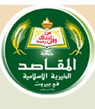

نشاطات منفذة من قبل وحدة المتطوعين المقاصديين
ترويقة صباحية لأمهات دار العجزة الإسلامية
مهرجان لاطفال دار الأيتام الإسلامية
"مخيم العمل التطوعي (البقاع) تنفيذ مشروع "حقي باللع
التحضيرات
توزيع المتطوعون على المؤسسات والجمعيات الهلية والدور الرعاية لتنفيذ 20 ساعة خدمة فعلية لدمجهم مع الفئات المستهدفة في مشاريعهم ضمن الأيام العالية للخدمة الشبابية
تدريب القادة والمسؤولي النوادي التطوعية على مفاهيم الخدمة المجتمعية وكيفية كتابة المشاريع وطرق تمويلها وكيفية التخطيط لمشروع الخدمة
تدريب المتطوعون في النوادي التطوعية في كليات جمعية المقاصد على مهارات التنمية الحياتية التي تتضمن ما يقارب من 35 جلسة تدريبية وكيفية كتابة المشاريع
على كل نادي تطوعي تنفيذ تلك المشاريع التي وضعت افكارها وهي لهذه السنة
مشروع ترفيهي لأمهات العجزة
مخيم العمل التطوعي
مشاريع ترفيهية مع اطفال الأيتام
مشروع الجداريات تم البدء به في كلية عمر بن الخطاب
تأهيل بيت بحاجة من قبل مهنيين في معهد الدبس بخبرتهم